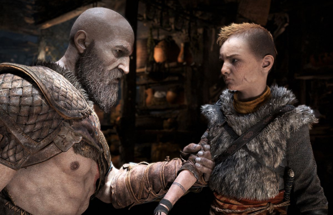
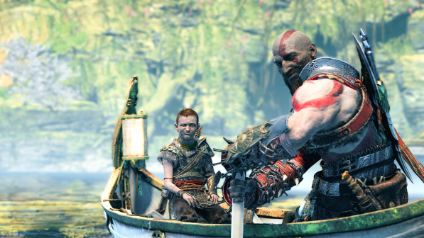
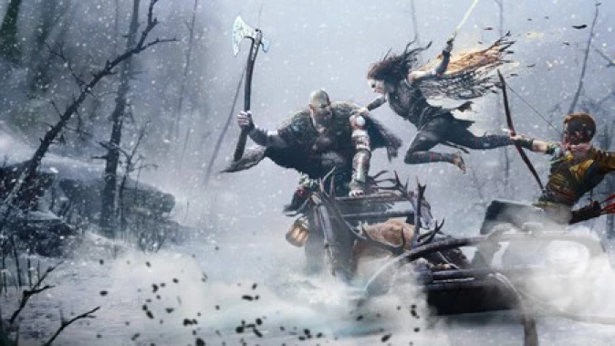

En God of War: Ragnarok, seguimos el viaje de Kratos y su hijo Atreus en el mundo nórdico mientras se enfrentan a la profecía del Ragnarok, el cataclismo que llevará al fin del mundo. Después de haber enfrentado desafíos increíbles y haber descubierto la verdad sobre su conexión con la mitología nórdica en el juego anterior, Kratos y Atreus se ven obligados a enfrentar el destino que se cierne sobre ellos y el mundo que los rodea.
Con el Ragnarok acercándose, los reinos nórdicos se sumergen en el caos y la guerra mientras los dioses y criaturas míticas luchan por el poder y la supervivencia. Kratos y Atreus deben navegar por este peligroso paisaje, enfrentándose a enemigos poderosos y forjando alianzas inesperadas mientras buscan una forma de evitar el cataclismo inminente.
En su viaje, Kratos y Atreus se enfrentarán a desafíos tanto físicos como emocionales, enfrentándose a sus propias limitaciones y oscuros secretos mientras luchan por proteger lo que más les importa en un mundo al borde del colapso. La narrativa épica y las batallas intensas caracterizarán este nuevo capítulo de la saga de God of War, prometiendo emociones fuertes y giros sorprendentes mientras los jugadores se sumergen en la mitología nórdica y luchan por el destino del mundo.
